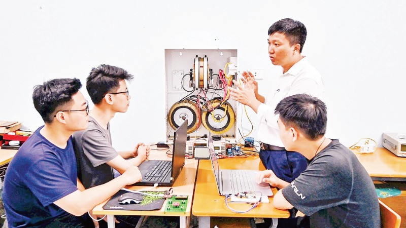

Tốt nghiệp cấp 3 nên học gì để sớm có việc làm?
Tốt nghiệp cấp 3 nên học nghề gì để có tương lai ổn định? Đây chắc chắn là câu hỏi khiến nhiều bạn học sinh và phụ huynh trăn trở. Bài viết này, LG Spa Training Center sẽ gợi ý các ngành nghề tiềm năng, giúp bạn định hướng sự nghiệp dễ dàng và phù hợp với bản thân.
2k7 nên học nghề gì sau khi tốt nghiệp cấp 3?
Khi bước vào năm cuối cấp, việc lựa chọn nghề nghiệp trở thành mối quan tâm hàng đầu của học sinh và phụ huynh. Dưới đây là top 7 ngành nghề có tương lai ổn định, giúp 2k7 sớm tìm được việc làm và tạo ra thu nhập.-
Spa & Chăm sóc sắc đẹp – Ngành “hái ra tiền” cho giới trẻ
Ngành Spa & Chăm sóc sắc đẹp hiện nằm trong nhóm lĩnh vực tăng trưởng nhanh tại Việt Nam, nhờ nhu cầu làm đẹp ngày càng đa dạng, từ chăm sóc da, điều trị da công nghệ cao đến phun xăm thẩm mỹ, gội đầu dưỡng sinh… Đây là ngành gần như không lo bão hòa, mở ra nhiều cơ hội việc làm và phát triển lâu dài. Đặc biệt, nghề này không yêu cầu bằng đại học, thời gian đào tạo ngắn (1 – 3 tháng) nhưng vẫn đem lại cơ hội việc làm rộng mở cùng mức thu nhập từ 10 – 30 triệu đồng/tháng tùy năng lực. Tại LG Spa Training Center, học viên được đào tạo theo giáo trình chuẩn quốc tế, học tập trong môi trường cơ sở vật chất hiện đại, dưới sự hướng dẫn của đội ngũ giảng viên giàu kinh nghiệm. Trung tâm cam kết 100% việc làm sau tốt nghiệp tại chuỗi hệ thống Viện Thẩm Mỹ LG Clinic với thu nhập 15 triệu đồng/tháng. Xem ngay chi tiết khóa học tại: https://lgspatraining.com/khoa-hoc-spa-tron-goi/ -
Dược sĩ
Dược sĩ là nghề gắn liền với sức khỏe cộng đồng, có nhu cầu nhân lực cao và ổn định. Khi theo học, sinh viên được trang bị kiến thức toàn diện về bào chế, kiểm nghiệm và tư vấn sử dụng thuốc an toàn. Sau khi tốt nghiệp, dược sĩ có thể làm việc tại bệnh viện, nhà thuốc, công ty dược phẩm hoặc tham gia hoạt động nghiên cứu và phát triển sản phẩm. Mức thu nhập phổ biến dao động từ 8 – 20 triệu đồng/tháng, tùy thuộc vào vị trí công tác và kinh nghiệm chuyên môn. -
Điều Dưỡng
Trong bối cảnh dân số già hóa, ngành Điều dưỡng đang trở thành một trong những nghề có nhu cầu tuyển dụng cao nhất tại bệnh viện, trung tâm y tế, và viện dưỡng lão. Nghề này không chỉ mang lại môi trường làm việc ổn định mà còn có mức thu nhập hấp dẫn (9 – 15 triệu đồng/tháng) và mở ra nhiều cơ hội làm việc tại nước ngoài. -
Hộ Sinh
Trong lĩnh vực y tế, ngành hộ sinh đóng vai trò quan trọng trong việc chăm sóc sức khỏe cho thai phụ và trẻ sơ sinh. Nghề này yêu cầu kiến thức vững vàng và kỹ năng chăm sóc toàn diện. Cơ hội việc làm của ngành này rất ổn định, chủ yếu tại các bệnh viện phụ sản, phòng khám chuyên khoa hoặc trung tâm chăm sóc sức khỏe sinh sản. -
Công nghệ thông tin
Công nghệ thông tin (CNTT) là một trong những ngành phát triển mạnh nhất hiện nay. Theo dự báo, đến năm 2025 Việt Nam cần khoảng 700.000 nhân lực CNTT. Mức lương khởi điểm thường từ 12 – 18 triệu đồng/tháng, và có thể lên tới 30 – 50 triệu đồng/tháng với vị trí senior. Đây là ngành phù hợp cho những bạn trẻ 2k7 thích công nghệ và muốn theo đuổi sự nghiệp ổn định. -
Công nghệ bán dẫn
Công nghệ bán dẫn là ngành mũi nhọn được nhiều quốc gia đầu tư mạnh mẽ. Tại Việt Nam, nhu cầu nhân lực trong lĩnh vực này rất lớn, nhưng nguồn cung mới chỉ đáp ứng khoảng 20%. Điều này mang lại cơ hội việc làm rộng mở cho các bạn 2k7, với mức lương khởi điểm từ 15 triệu đồng/tháng. Với kinh nghiệm lâu năm (trên 10 năm), thu nhập có thể lên tới hơn 1,5 tỷ đồng/năm.  -
Ngôn ngữ Anh
Nếu có khả năng tiếng Anh tốt, bạn có thể học ngành ngôn ngữ Anh và làm việc trong nhiều lĩnh vực đa dạng như giảng dạy, biên phiên dịch, du lịch, xuất nhập khẩu và truyền thông quốc tế. Hơn nữa, việc thành thạo ngoại ngữ giúp bạn dễ dàng ứng tuyển vào các công ty đa quốc gia hoặc làm việc ở nước ngoài, với mức thu nhập khởi điểm hấp dẫn từ 8 – 15 triệu đồng/tháng và có thể tăng nhanh theo năng lực.
Định hướng nghề nghiệp cho 2k7 sau khi tốt nghiệp THPT
Giai đoạn từ 15 – 22 tuổi là thời điểm quan trọng, đánh dấu bước chuyển mình từ môi trường học tập phổ thông sang con đường sự nghiệp. Sau khi hoàn thành chương trình cấp 3, mỗi cá nhân sẽ đối diện với nhiều lựa chọn: tiếp tục học lên bậc cao hơn, theo đuổi chương trình đào tạo nghề hoặc gia nhập thị trường lao động. Trong bối cảnh nền kinh tế phát triển nhanh, nhu cầu tuyển dụng nhân lực có kỹ năng nghề cao đang ngày càng tăng. Việc lựa chọn học nghề không chỉ rút ngắn thời gian đào tạo mà còn giúp sớm tiếp cận cơ hội việc làm ổn định, thu nhập tốt.
Trở thành học viên LG Spa Training Center, bạn sẽ được đào tạo bài bản theo giáo trình chuẩn quốc tế, với hơn 90% thời lượng thực hành cùng đội ngũ giảng viên giàu kinh nghiệm. Sau khi tốt nghiệp, học viên sẽ được nhận làm việc trực tiếp tại chuỗi hệ thống Viện Thẩm Mỹ LG Clinic với thu nhập 15 triệu đồng/ tháng. Liên hệ ngay hotline để được tư vấn chi tiết hơn về các khoá học spa.
Trong bối cảnh nền kinh tế phát triển nhanh, nhu cầu tuyển dụng nhân lực có kỹ năng nghề cao đang ngày càng tăng. Việc lựa chọn học nghề không chỉ rút ngắn thời gian đào tạo mà còn giúp sớm tiếp cận cơ hội việc làm ổn định, thu nhập tốt.
Trở thành học viên LG Spa Training Center, bạn sẽ được đào tạo bài bản theo giáo trình chuẩn quốc tế, với hơn 90% thời lượng thực hành cùng đội ngũ giảng viên giàu kinh nghiệm. Sau khi tốt nghiệp, học viên sẽ được nhận làm việc trực tiếp tại chuỗi hệ thống Viện Thẩm Mỹ LG Clinic với thu nhập 15 triệu đồng/ tháng. Liên hệ ngay hotline để được tư vấn chi tiết hơn về các khoá học spa.